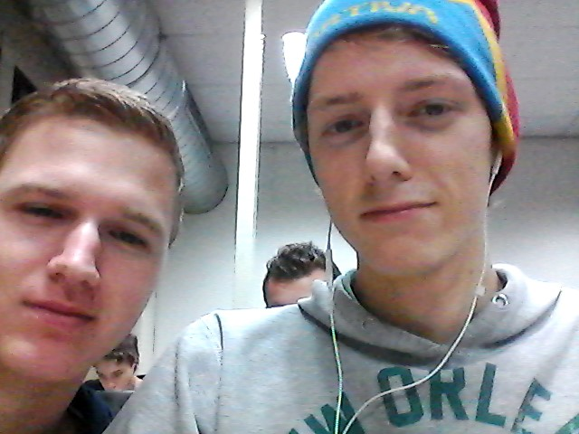

Over ons
Welkom op PC4U
Computers zijn er genoeg, maar welke heb je nodig, waar moet je computer aan voldoen en wat moet je er allemaal mee kunnen? Een computer kopen is niet gemakkelijk. En een game computer al helemaal niet. Om dit probleem op te lossen is PC4U.ovh gestart. Bij ons koop je gemakkelijk de Game PC die je nodig hebt. Kies uit de verschillende modellen en pas dit model naar eigen wens aan zodat het jouw unieke game computer is geworden
Jouw unieke droom Game PC
 Jouw unieke droom Game PC is binnen en staat klaar om de ultieme game ervaring mee te beleven. Dat is waar wij het voor doen, we zeggen niet voor niets “Omdat de games het waard zijn”. Wij zijn begonnen met PC4U.ovh omdat we vinden dat de games het waard zijn om in de hoogste instellingen vlekkeloos te draaien, of zoals jij je games wilt draaien. Daarom maken wij producten die daarvoor zorgen.
Omdat de games het waard zijn
Wij begrijpen dat een passie voor gamen en/of bepaalde games iets heel anders is dan de passie, handigheid en kennis van computer componenten. Daarom kies je bij ons heel eenvoudig de juiste PC die het beste uit jouw games haalt. Je hoeft geen verstand te hebben van de componenten om bij PC4U.ovh een ultieme PC te bestellen. Natuurlijk is PC4U.ovh ook een goede keuze als je wel verstand hebt van componenten. Je krijgt namelijk een complete garantie, service en ondersteuning op je hele Game PC, in plaats van garantie per component. Wanneer je PC een defect vertoont hoef je dus niet meer zelf te zoeken naar het defect en het kapotte onderdeel op te sturen. Wij kijken gewoon je hele PC na en zorgen binnen zeer korte tijd dat jij weer kunt genieten van je favoriete games. Het concept zijn wij 10 jaar geleden begonnen in een mooie computerwinkel. Later hebben we een webshop geopend, zodat in heel Nederland en België gamers de mogelijkheid hebben om gebruik te maken van ons unieke concept.